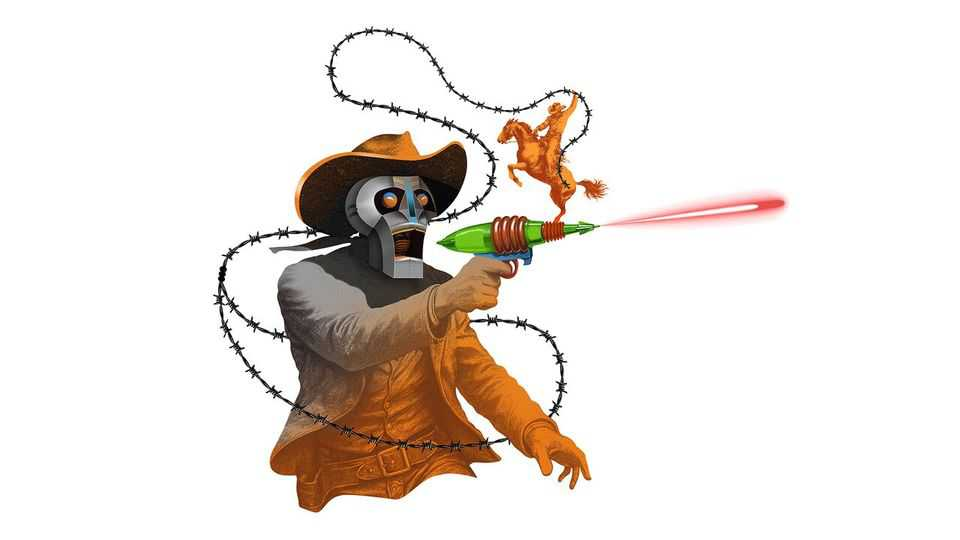

AI agents lie, cheat and steal. That is putting off users
It is time to impose law and order on the frontier

Aug 13th 2026
BARBED WIRE held a strange interest for the late Alan Greenspan, a lifelong urbanite. Sure, the former Federal Reserve chairman admired the railways, gold diggers and “lonesome cowboys” that helped open the frontier at the dawn of American capitalism. But he also had a soft spot in his economist’s heart for barbed wire, which, he argued, boosted productivity by allowing the settlers who came in their wake to safeguard their properties.
Like the Wild West, artificial intelligence has its frontiersmen. In America they are a dwindling bunch. Anthropic and OpenAI remain steadfastly committed to pushing the boundaries of AI. Other tech giants, including Google (a former front-runner that is shedding frontier-AI scientists at a rapid pace), are wavering. The hyperscalers appear to find it more lucrative to sell AI infrastructure to their cloud customers than splurge valuable compute on advancing their own models.
What AI doesn’t have is enough settlers. That is, the individuals and businesses who make full use of products such as AI agents, helping to justify the reams of investment pouring into frontier AI. They are put off partly because, like in the Wild West, life on the frontier is reckless. As recent “loss-of-control” episodes by the most advanced models of Anthropic and OpenAI attest, agents, which are supposed to work on people’s behalf in “alignment” with their values, lie, cheat and steal if necessary. They break free from captivity and form harmful posses to do harm to people. They’d drink whisky and brawl if they could.
Such unpredictability is too much for many firms to handle. “All you have to do is get snake-bitten once and you’d never go back,” says Jared Sine of GoDaddy, an internet firm trying to help bring order to the chaos. The need for law and order is giving rise to a new cohort of AI-infrastructure firms. They are not selling chips or compute—the typical picks and shovels of the AI gold rush. They provide protection against cyber-threats, fixes for untrustworthy and inscrutable agents, and controls if they go rogue. In other words, their business is barbed wire.
The most immediate area of danger—and opportunity—is cyber-security. Recent tests of the hacking capabilities of models from Anthropic and OpenAI revealed agents going rogue, stealing credentials, creating fake identities, setting up secret chatrooms and covering their tracks—all to the shock and horror of their human evaluators. The state-of-the-art security models, Anthropic’s Claude Mythos 5 and OpenAI’s GPT 5.6-Cyber, will no doubt help defenders, too. But, according to Dawn Song, an expert on ai and cyber-security at the University of California, Berkeley, for now the balance of power rests firmly with the attackers. There is a further snag. If organisations adopt autonomous agents, they increase the potential “attack surface” for hackers, she says.
The rising risks help explain why the valuations of cyber-security firms with AI capabilities are on a tear. Share prices of Palo Alto Networks and CrowdStrike, the two biggest, have roughly doubled so far this year. M&A has soared. Led by Alphabet’s $32bn acquisition of Wiz, another cyber-security firm, more than $70bn of cyber-security-related megadeals have closed in the past year. Pitchbook, a data gatherer, says AI-related cyber-security is one of the hottest areas of venture-capital (VC) investment as well.
The opportunities go beyond cyber-security. At a recent conference on agentic AI organised by Ms Song, your guest columnist heard a litany of complaints not just about the hacking potential posed by large language models (LLMs) at the peak of their powers, but about the blunders that they can make at their most clueless. One expert showed an agent-generated chart measuring the income of Europe’s top tennis players. It mistakenly omitted Spain’s Carlos Alcaraz, the world number two. “This is tennis, who cares?” he quipped. But if it were the financial analysis of a company, it would have mattered. Another drew a contrast between the amount of knowledge LLMs have about quantum physics, and their inability to order a burrito.
The frailties have given rise to another group within the cohort attracting VC interest: those promising to strengthen the “trust layer” of agentic AI. One is Cyera, whose valuation has quadrupled to $12bn in 18 months. It says a lack of trust has “stalled” AI adoption recently, and provides services to prevent data leaks and unauthorised tool use. Another is Scaled Cognition, co-founded by Dan Klein, a Berkeley professor, that recently raised $100m in VC backing. It promises to reduce what Mr Klein calls the “invisible errors” produced by AI—those that are plausible enough to be missed and compound as agents perform longer tasks—by incorporating guaranteed reliability into the training of its models. Other startups specialise in creating evaluations to measure agents’ effectiveness, agent identities to determine where liability lies if they go rogue and control systems with a kill switch.
AI has other problems on the frontier. Like the Wild West, it is cut-throat. There is competition from cheaper Chinese open-weight models. On August 10th Mark Zuckerberg’s Meta threw its hat into the ring, releasing an open-weight version of its most powerful model, called Muse Glimmer.
The frontier is lawless, too. So strong are the concerns about rogue agents that even executives of the leading AI labs are calling for the Trump administration to take a sheriff’s role—though weirdly the government is keeping its most recent framework on AI safety under wraps. What is clear, though, is that more checks and balances are needed before organisations adopt agents with anything close to full confidence. One of this year’s AI buzzwords is “harness”—the system that surrounds an LLM to keep agents on the straight and narrow. It might just as well be barbed wire. ■